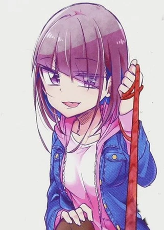
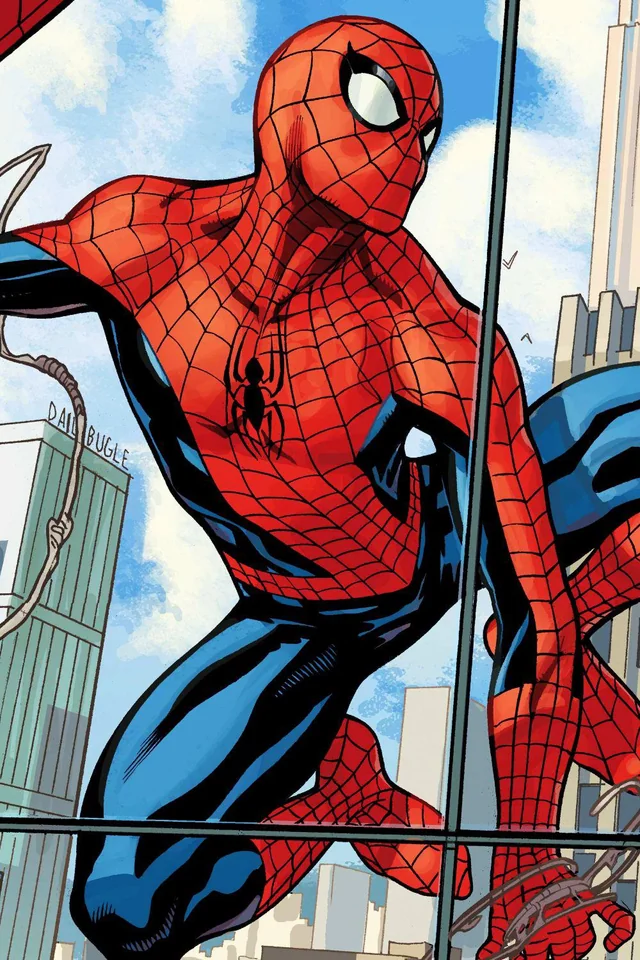

Mis Aficiones
Me encanta el anime, los videojuegos, el manga y el universo de Marvel. Cada uno de estos mundos me ofrece algo único y especial.
Disfruto viendo anime porque me sumerge en historias llenas de emoción, acción y personajes memorables. Desde aventuras épicas hasta relatos conmovedores, siempre hay algo nuevo que descubrir.
Los videojuegos son otra de mis grandes pasiones. Me gusta explorar mundos virtuales, superar desafíos y disfrutar de experiencias interactivas que me transportan a otros universos.
El manga me permite disfrutar de historias fascinantes con ilustraciones increíbles. Cada página es una ventana a una nueva experiencia llena de creatividad y emoción.
Por último, el universo de Marvel me ha cautivado con sus héroes, villanos y relatos épicos. Spider-Man, en particular, es un personaje con el que me identifico mucho por sus valores y su espíritu de lucha.
Si te gustan estas cosas tanto como a mí, seguro que tenemos mucho en común.
Favoritos
- Anime Favorito: Mushoku Tensei - Una historia épica de fantasía y reencarnación que sigue la vida de Rudeus Greyrat mientras busca redimirse y encontrar su propósito en un mundo mágico.
- Manga Favorito: Ijousha no Ai - Un thriller psicológico intenso que explora los límites del amor obsesivo y la locura. 
- Superhéroe Favorito: Spider-Man - Me encanta la historia de Peter Parker, un héroe con el que muchos podemos identificarnos gracias a sus valores, sus luchas personales y su icónica frase: "Un gran poder conlleva una gran responsabilidad". 
- Videojuego Favorito: Minecraft - Un mundo infinito de creatividad y aventura donde puedo construir, explorar y sobrevivir sin límites.